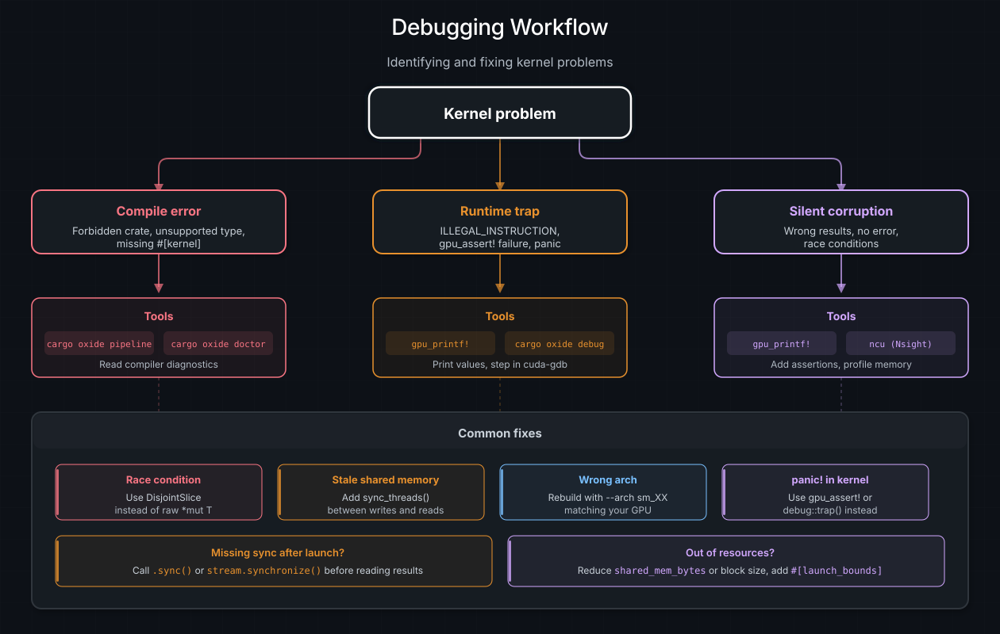

Error Handling and Debugging#
GPU kernels fail differently from CPU code. The CUDA toolchain does not
support exceptions or stack unwinding today, there are no stack traces in
kernel output, and no println!. When something goes wrong, the result is
either silent data corruption, a hardware trap, or a cryptic driver error on the
host. This chapter covers cuda-oxide’s tools for diagnosing and fixing kernel
problems.
What happens when a kernel goes wrong#
GPU errors fall into three categories:
Failure mode |
What you see |
Example |
|---|---|---|
Silent corruption |
Wrong results, no error |
Race condition, off-by-one index |
Hardware trap |
|
|
Launch failure |
|
Wrong grid dims, missing module, out of resources |
The CUDA toolchain does not expose an exception mechanism today (the hardware could support it, but nvcc/ptxas do not wire it up). A trap instruction kills the kernel and poisons the CUDA context – subsequent operations on the same context will fail until you handle or recreate it.
gpu_printf! – printing from the GPU#
gpu_printf! lets you print values from device code for quick debugging. It
uses CUDA’s built-in vprintf mechanism:
use cuda_device::{kernel, thread, gpu_printf, DisjointSlice};
#[kernel]
pub fn debug_kernel(data: &[f32], mut out: DisjointSlice<f32>) {
let idx = thread::index_1d();
if idx.get() < 4 {
gpu_printf!("Thread {} sees value {}\n", idx.get(), data[idx.get()]);
}
if let Some(out_elem) = out.get_mut(idx) {
*out_elem = data[idx.get()] * 2.0;
}
}
Important details#
Flush requires sync. Output is buffered on the GPU and only appears on the host after a stream or device synchronization (e.g.,
to_host_vecorctx.synchronize()).Buffer size. The default printf buffer is 1 MiB. If many threads print, output may be truncated. Enlarge with
cudaDeviceSetLimit(cudaLimitPrintfFifoSize, size).Thread ordering. Output from different threads appears in arbitrary order.
Performance. Printf serializes across threads – avoid it in hot paths. Use it for debugging, not logging.
Format conversion. The macro converts Rust
{}format specifiers to C printf equivalents (%d,%f, etc.) at compile time.
Why not println! or Debug?#
Standard Rust formatting (fmt::Display, fmt::Debug, format!, println!)
requires dynamic dispatch, string allocation, and I/O – none of which exist on
the GPU. gpu_printf! bypasses all of this by lowering directly to a CUDA
vprintf call.
gpu_assert! and trap()#
For fatal error checking on the device, use gpu_assert! or debug::trap():
use cuda_device::{kernel, thread, debug, gpu_assert, DisjointSlice};
#[kernel]
pub fn checked_kernel(data: &[f32], len: u32, mut out: DisjointSlice<f32>) {
let idx = thread::index_1d();
gpu_assert!(idx.get() < len as usize); // traps if false
if let Some(out_elem) = out.get_mut(idx) {
*out_elem = data[idx.get()];
}
}
Intrinsic |
What it does |
Host effect |
|---|---|---|
|
Traps if condition is false |
|
|
Unconditional trap |
|
|
Emit |
Pauses in cuda-gdb; crashes without debugger |
The trap-and-check pattern#
A common workflow for catching device-side errors:
// Launch kernel
// SAFETY: config matches vecadd's 1D indexing and all buffer bounds.
unsafe { module.vecadd(&stream, config, &a, &b, &mut c) }
.expect("Launch failed");
// Synchronize and check for traps
stream.synchronize().expect("Kernel trapped -- check gpu_assert! conditions");
If a gpu_assert! fires, synchronization returns an error. The error message
doesn’t tell you which assertion failed, so use gpu_printf! alongside
assertions to narrow down the problem.
Host-side error handling#
DriverError#
The synchronous launch path returns
Result<(), DriverError>. The DriverError wraps a CUDA driver result code:
// SAFETY: config matches vecadd's 1D indexing and all buffer bounds.
match unsafe { module.vecadd(&stream, config, &a, &b, &mut c) } {
Ok(()) => { /* launched successfully */ }
Err(e) => eprintln!("Launch failed: {e}"),
}
DeviceError#
The async path ({kernel}_async / DeviceOperation) uses DeviceError,
which wraps driver errors alongside context and scheduling failures:
use cuda_async::error::DeviceError;
let result: Result<Vec<f32>, DeviceError> = operation.sync();
DeviceError variants include Driver, Context, KernelCache, Scheduling,
Launch, and Internal.
CudaContext::check_err#
After a series of operations, call check_err() on the context to surface any
asynchronous errors that may have been recorded:
ctx.check_err().expect("Asynchronous GPU error detected");
cargo oxide debug – cuda-gdb integration#
cargo oxide debug builds your kernel with debug info and launches cuda-gdb:
cargo oxide debug vecadd # Standard GDB
cargo oxide debug vecadd --tui # GDB with TUI
cargo oxide debug vecadd --cgdb # cgdb front-end
By default this gives you source-level debugging: cuda-gdb can stop in Rust source files and show a useful backtrace. Local-variable inspection is a separate, heavier mode that you opt into when you need it.
Debug info modes#
cuda-oxide has three device debug modes:
Mode |
How to enable it |
What you get |
Cost |
|---|---|---|---|
Off |
default for normal |
Fastest generated PTX, no source mapping |
none |
Line tables |
|
Source breakpoints, stepping, backtraces |
low |
Full |
|
Line tables plus basic argument/local inspection |
higher |
Think of line tables as a map from machine instructions back to source lines:
PTX instruction ──debug line table──> src/main.rs:39
Full debug adds variable records:
source local `tid`
|
v
LLVM/DWARF says: "tid lives in this stack slot"
|
v
cuda-gdb can try: print tid
For local variables, the debugger also needs the current instruction to be inside the same lexical scope as the variable:
function
└─ if-let block
└─ loop block
└─ current instruction
If you stop too early, such as at kernel launch or at the first helper call,
the variable may honestly print as <optimized out> because it has not been
loaded into a register yet. For variable checks, prefer a source line after the
value is used:
break src/main.rs:412
run
info args
info locals
Seeing one variable as <optimized out> is not automatically a compiler bug;
it can mean “this value has no live machine location at this exact PC.” Debug
info is a map, not a time machine.
For inlined helper calls, cuda-oxide also keeps the original owner of each
argument. That matters because two different functions can both have an
argument numbered 1:
kernel(data) calls helper(self)
data -> arg #1 in kernel's debug scope
self -> arg #1 in helper's debug scope, with "inlined at" the kernel callsite
Without that scope split, LLVM treats the metadata as contradictory and drops it. Debug info is fussy like that; it wants the family tree, not just the surname.
Use line tables first. They are enough for most “where did execution go?”
questions, and they avoid the slower CUDA debug target mode. Use full debug
when you specifically want print idx, print ptr, or similar local-variable
inspection. Debuggers are allowed to be nosy; they are not always allowed to be
fast.
The CUDA_OXIDE_DEBUG override works with build, run, pipeline, and
debug:
CUDA_OXIDE_DEBUG=line-tables cargo oxide pipeline vecadd
CUDA_OXIDE_DEBUG=full cargo oxide debug vecadd
Useful aliases:
Value |
Meaning |
|---|---|
|
no device debug metadata |
|
source line tables only |
|
line tables plus basic variable metadata |
Why full debug turns optimization off#
Reliable local inspection and aggressive optimization pull in opposite
directions. An optimized value usually lives in a register only across the
short window where it is used; outside that window the debugger honestly has
nowhere to read it from, so info locals shows <optimized out>. The only way
to make a variable inspectable for its whole scope is to keep it in memory
and describe it with llvm.dbg.declare, the way every debug build does
(gcc -O0, rustc debug, and nvcc -G).
So CUDA_OXIDE_DEBUG=full is a -G-style build. It automatically:
keeps every source local in its stack slot (skips Pliron
mem2reg),skips annotated loop unrolling, which requires
mem2reg’s SSA form,skips LLVM
opt -O2, andruns
llcat-O0,
so the locals you see in cuda-gdb are real and stable. You do not need to set
CUDA_OXIDE_NO_OPT=1 yourself; full mode implies it.
Setting |
Meaning |
|---|---|
|
no device debug metadata; fully optimized PTX |
|
source lines only; still optimized |
|
source lines plus locals/args; optimization off ( |
Line tables stay on the optimized pipeline because a line map survives optimization well; locals do not, which is why full mode steps off it.
The promotion-aware
mir.dbg_valuesalvage that Plironmem2regperforms is the building block for a future optimized debug tier (locals throughopt -O2, best-effort). It is not whatfulluses today.
What works today#
Line-table mode supports:
breakpoints by kernel name, e.g.
break vecaddsource stepping and backtraces
helper/inlined source locations from other files, such as stepping from your kernel into
cuda-device/src/thread.rs
Full mode (-G) supports inspecting:
local variables and arguments rustc exposes through
var_debug_infoscalar types (
bool, integers, floats), raw pointers, and referencesstructs, tuples, and fixed-size arrays, with their fields shown at the correct (real-layout) offsets, e.g.
out = DisjointSlice {ptr: 0x..., len: 1}andidx = ThreadIndex {raw: 0}
End-to-end behavior (breakpoint binds, backtrace, info args/info locals) is
checked on real hardware by scripts/debug-smoketest.sh.
Full mode does not yet describe: enums (Option, Result, and other
multi-variant types), bare slice arguments split into a (ptr, len) pair at
the ABI boundary, closures, projections like x.0, or destructured variables.
Locals of an inlined helper frame may also show fewer entries than the kernel
frame; select the kernel frame (frame 1) to inspect kernel locals.
Breakpoint workflow#
Build with debug:
cargo oxide debug <example>Set a breakpoint on your kernel:
break vecaddRun:
runInspect threads:
cuda thread,cuda block,cuda warpPrint variables:
print idx,print *c_elem
cargo oxide debug selects the executable from Cargo’s build artifact
metadata instead of assuming target/release/<example>. That keeps debugging
working with custom binary names, package.default-run, configured target
directories, host target triples, and virtual workspaces. Use --bin <name>
when a package has multiple binaries and no unambiguous default.
For programmatic breakpoints, use debug::breakpoint() in your kernel code.
When cuda-gdb hits the brkpt instruction, it pauses execution and lets you
inspect the GPU state.
Tip
debug::breakpoint() will crash the kernel if no debugger is attached.
Guard it with a compile-time flag or only use it during debugging sessions.
cargo oxide sanitize – Compute Sanitizer#
For memory and synchronization correctness checks, run the same build path under NVIDIA Compute Sanitizer:
cargo oxide sanitize vecadd
cargo oxide sanitize sharedmem --tool racecheck
cargo oxide sanitize debug --tool synccheck -- --kernel-name kns=clock
cargo oxide sanitize my_app -- --leak-check full -- --app-flag value
memcheck is the default tool. Use racecheck for shared-memory hazards,
initcheck for uninitialized global-memory reads, and synccheck for invalid
synchronization usage. Extra arguments after -- are passed directly to
compute-sanitizer before the executable; use a second -- to pass arguments
to the target program after the executable.
The command enables optimized device line tables by default so findings can
name Rust source files and lines. An explicit CUDA_OXIDE_DEBUG process or
project setting still wins.
Compute Sanitizer normally exits with status zero even when it reports a tool
finding. cargo oxide sanitize therefore supplies --error-exitcode 86 by
default, making findings fail scripts and CI. An explicit sanitizer argument
overrides that default:
# Intentionally keep a zero exit status and inspect the printed report.
cargo oxide sanitize vecadd -- --error-exitcode 0
Options such as --check-exit-code no and --require-cuda-init no weaken what
a zero status proves. The wrapper therefore never declares the report clean
from process status alone; it reports completion and leaves the sanitizer
output visible for inspection.
The --no-fmad CLI flag is forwarded through both ordinary and interop builds.
It keeps ordinary multiply and add/subtract operations separate, with one
rounding per operation. Explicit fused operations such as f32::mul_add
remain fused.
NVVM IR and LTOIR builds also produce .options and versioned .target
sidecars. Keep both files with the artifact so later libNVVM and nvJitLink
steps preserve the same FMA policy.
Run memcheck first when investigating memory safety. The other tools are
complementary and do not perform full memory-access checking.
cargo oxide doctor – environment validation#
Before debugging kernel failures, verify your environment is correctly set up:
cargo oxide doctor
Doctor checks:
Check |
What it verifies |
|---|---|
Rust toolchain |
Nightly compiler with required components |
Codegen backend |
|
CUDA headers |
|
CUDA toolkit |
|
libNVVM |
|
nvJitLink |
|
libdevice |
|
LLVM |
|
Driver / GPU |
|
The libNVVM / nvJitLink / libdevice checks fire only when a kernel calls
CUDA libdevice math (sin, cos, exp, pow, sqrt, …). If your
kernel is pure arithmetic, those three failing is harmless. They all ship
with the CUDA Toolkit – no separate download. If any check fails, doctor
prints the standard install location for that component.
Doctor itself needs neither the CUDA toolkit nor a driver, and it never
builds anything first, so it works on a machine where nothing is installed
yet. Two checks are informational rather than fatal: the codegen backend (a
missing .so just means “run cargo oxide setup”; run/build build it
on demand anyway) and the driver / GPU check (only cargo oxide run needs
a GPU; build and pipeline work without one).
cargo oxide pipeline – inspecting the compilation#
When a kernel produces wrong results but no errors, inspect the compilation pipeline to see exactly what code was generated:
cargo oxide pipeline vecadd
This prints the full pipeline output:
MIR collection – which functions the collector found
dialect-mir– pliron IR modelling Rust MIR (before and aftermem2reg)LLVM dialect – pliron IR modelling LLVM IR, provided by
pliron-llvm(aftermir-lower)Textual LLVM IR – serialized
.llfileFinal PTX – the generated assembly
Environment variables#
For more targeted inspection:
Variable |
Effect |
|---|---|
|
Verbose compiler output |
|
Dump the rustc MIR before import |
|
Emit source line-table metadata |
|
Emit full metadata for basic locals and args |
Profiling with Nsight Compute#
For performance debugging, NVIDIA’s Nsight Compute (ncu) provides
roofline analysis, memory throughput, and occupancy metrics:
ncu --set full ./target/release/my_example
cuda-oxide kernels can emit profiler triggers using
debug::prof_trigger::<N>(), which generates a pmevent instruction that
Nsight Compute and Nsight Systems can capture for timeline annotation.
See also
Nsight Compute Documentation for the full profiling toolkit.
Common pitfalls#
Pitfall |
Symptom |
Fix |
|---|---|---|
Race condition on output buffer |
Wrong results, non-deterministic |
Use |
Missing |
Stale shared memory reads |
Add barrier between writes and reads |
Wrong |
|
Match |
Out-of-bounds with raw pointers |
Trap or silent corruption |
Use |
|
Compile error (fmt unavailable) |
Use |
Forgetting to sync after launch |
Host reads stale data |
Call |
PTX built for wrong arch |
|
Rebuild with |
{kind=link}

Debugging decision tree: kernel problems fall into three categories (compile error, runtime trap, silent corruption), each with different diagnostic tools. Common fixes are shown at the bottom.#